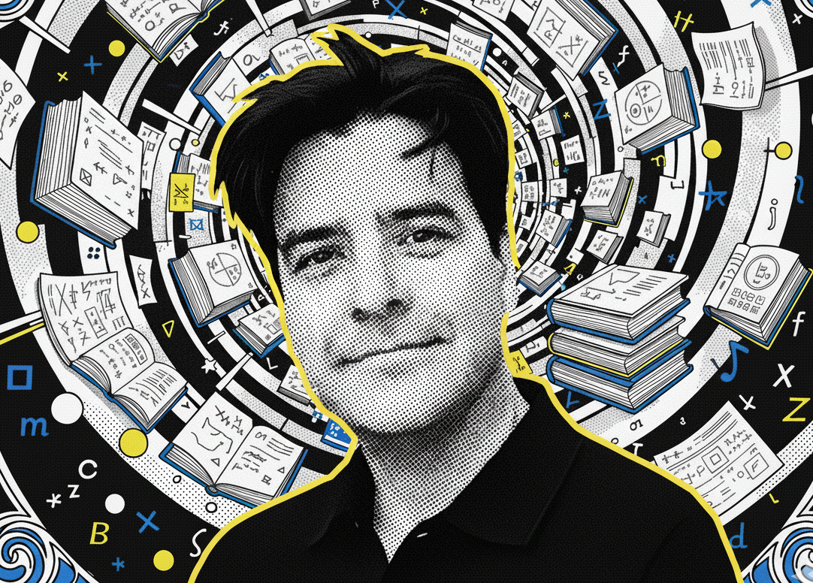

Ramsey theory and foundations
My research centers on topological Ramsey spaces, ultrafilters, nonstandard models of arithmetic, and related questions in combinatorics and logic.
Mathematics, teaching, logic, and carefully built courses
I am a mathematician whose work connects Ramsey theory, ultrafilters, logic, and the foundations of mathematics with a sustained commitment to undergraduate and graduate teaching.

My research centers on topological Ramsey spaces, ultrafilters, nonstandard models of arithmetic, and related questions in combinatorics and logic.
I design courses around clear objectives, structured practice, active learning, and public-facing resources that help students see the shape of the subject.
This site is becoming a durable archive for past courses, lecture materials, student projects, and independent resources.
Featured course archives
A pandemic-era public course archive with notes, sample exams, and linked lecture videos. This archive is being cleaned so expired third-party material falls away while my materials remain usable.
A website-facing version of the Blackboard course structure: modules, learning outcomes, readings, proof practice, and exam preparation for mathematical logic.